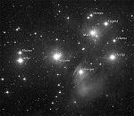

El universo cambiante: ¡La evolución ocurre!
b) Cambios en las estrellas
Uno de los más grandes descubrimientos de la ciencia moderna es que las estrellas (como las personas) viven solamente un período de vida cuantificable y luego mueren. A pesar de que las vidas de las estrellas son enormemente mayores que el lapso de la vida humana, nosotros podemos aprender acerca del historial de vida de las estrellas estudiándolas en las diferentes etapas de su ciclo de vida, desde el nacimiento hasta la muerte. Como en una analogía, imagínese que una raza hipotética de alienígenas visitaron la Tierra hace una hora o dos, y tuvieron que hacer observaciones para reunir los trozos del ciclo de vida de los humanos. Estudiar un ser humano o incluso tres o cuatro en ese período de tiempo tan corto, difícilmente les daría mucha información útil.
El truco sería examinar tantos humanos de diferentes tipos como sea posible y luego deducir las etapas diferentes en nuestras vidas. Por ejemplo, algunos de ellos podrían visitar una sala de maternidad, y ver a los humanos justo antes o después de nacer. Ellos podrían incluso ver un nacimiento en progreso. Otros, en el mismo hospital, podrían ser testigos de las etapas justo antes y después de la muerte. Alguien afuera en la calle podría observar gente de diferentes edades: pequeños con sus padres, viejos con sus niños, adolescentes y adultos en varios grupos.

La faz de la luna marcada por cráteres
De la misma manera, los astrónomos (capaces de dar un vistazo a una estrella sólo por un “momento” de su larga existencia), deben examinar muchas estrellas y tener la esperanza de encontrar alguna en cada etapa de su vida. Y hemos sido capaces de hacer exactamente eso. Hemos encontrado estrellas jóvenes cerca de las “salas de maternidad” de gas y polvo donde están naciendo. Podemos observar estrellas como nuestro propio Sol, que están en la estable etapa “adulta” de sus vidas. (Un buen número de estrellas cercanas similares al Sol están rodeadas de uno o más planetas, justo como lo está el Sol). Podemos ver estrellas gigantes rojas en la “crisis de la mediana edad”, hinchadas por los cambios muy dentro de sí. Y al estudiar cadáveres estelares llamados enanas blancas y estrellas de neutrones, podemos observar los efectos posteriores de la muerte estelar.
El lento proceso de la vida y muerte estelar puede ser deducido de agrupaciones de estrellas llamados “racimos de estrellas, que han nacido juntas y viven sus vidas como un grupo. Un buen ejemplo de tales grupos es el hermoso racimo de las Pléyades, que pueden ser vistas en el firmamento durante el otoño y el invierno. En tal racimo, estrellas diferentes pasan a través de sus vidas a pasos diferentes, y nosotros podemos encontrar estrellas que comenzaron juntas, pero que ahora están en diferentes etapas de sus vidas.
Los cambios en cómo las estrellas viven sus vidas pueden ser observados directamente en una clase especial de estrellas llamada “estrellas variables pulsantes”; la estrella del Norte, la estrella polar, es un ejemplo. Esta estrella se expande y contrae en un estilo rítmico cada 4 días. Pero mientras se infla lentamente con la edad, se vuelve más grande, y la expansión y contracción toman mesuradamente más tiempo.
¿Qué aprendemos al estudiar las estrellas en sus etapas diferentes (y simulando su comportamiento y física en computadoras de alta velocidad)?. Nosotros encontramos que las estrellas evolucionan de una forma a otra –de jóvenes energéticas, a adultos estables, a gigantes inflados, y hasta morir y volverse un cadáver. Notamos (porque algunas estrellas explotan) que nuevas generaciones de estrellas incluyen algunos de los materiales producidos por generaciones previas y que el número de átomos más complejos en el Universo está lentamente creciendo. Nosotros tenemos evidencia muy buena de que nuestro Sol (con sus planetas) no estaba entre las primeras estrellas que el Universo produjo, sino que se formó más tarde de materiales enriquecidos por las muertes de generaciones previas.
Ésta es una idea clave en la astronomía –que la evolución de las estrellas gradualmente cambia la estructura del cosmos. Las estrellas no son meros telones de fondo para nuestra existencia en la Tierra- criaturas tan complejas como somos nosotros no pudieron haber evolucionado en la Tierra sin los materiales que anteriores generaciones de estrellas contribuyeron a la “piscina de elementos” cósmicos. Y el Sol mismo no durará para siempre, sino que algún día morirá. En el proceso, se expandirá eventualmente y hará la vida en la Tierra imposible, completamente independiente de los que los humanos hagamos.
Volver a la sección Ciencias de los orígenes
Comentarios
Comments powered by Disqus